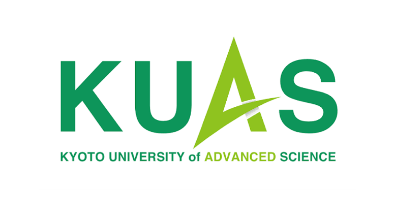

Sachintha Balasooriya
Building autonomous navigation and multi-agent platforms for industrial automation, from concept to deployment.
Selected work
2023 – Now. Field and agricultural robotics built across mechanical, firmware, and software.
Where I've built things
- Systems Architecture: Directing mechanical, embedded, and software architecture for 6×6 AGVs in unstructured outdoor environments.
- Autonomy & Navigation: Leading LiDAR-inertial SLAM pipelines, custom Nav2 plugins, and real-time terrain classification.
- Technical Stewardship: Primary technical authority across engineering, investors, and vendors.
Owned mechatronics, firmware and software for multi-agent automation platforms, plus three custom AGV prototypes with active self-leveling suspension.
Designed a 6×6 drivetrain for a 30 kg-payload agricultural rover and a zero-backlash humanoid eye mechanism.
Module lead for Analog Electronics, Robotics & Automation, and Embedded Systems; supervised student research.
Prototyped multi-articulating prosthetic arms and fingers, cut unit costs, and led a small hardware team.
Tools of the trade

Robotics & Autonomy
ROS / ROS 2, Nav2, SLAM (LiDAR, visual, depth), motion planning

Mechanical Design & Simulation
SolidWorks (9+ yrs) incl. topology optimization, FEA in Creo Parametric

Embedded & Electronics
PlatformIO, Atmel Studio, MPLAB X, Eagle CAD, Proteus, Siemens Simatic EKB, ABB RobotStudio

Systems & Backend
Flask, MQTT, SQL, Linux, Git

AI / Computer Vision
TensorFlow, PyTorch, YOLO (Ultralytics), OpenCV

Languages
C, C++, Python, Java
Research articles
12 peer-reviewed publications in robotics, SLAM, and autonomous navigation (IEEE, RSJ).
Autonomous Robotic Platform for Proximal Data Collection Amongst Foliage Utilizing an Anisotropically Flexible Manipulator
Forecasting model comparison for soil moisture to obtain optimal plant growth
Innovative Path Planning Algorithm for an Autonomous Robot with Low Computational Cost
Education

M.Sc., Robotics & Mechatronics
B.Eng., Engineering (Honors)
Certificates and transcripts upon request.
Honors & awards
Let's talk about what you want to build.
Open to new projects and conversations in field robotics, embedded systems, and mechatronics.


.png)